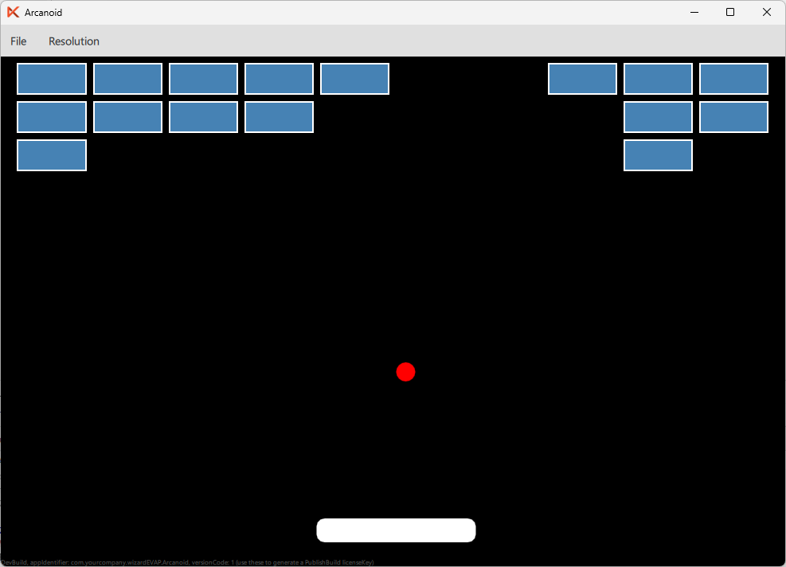

In this tutorial, we will build the core gameplay of an Arcanoid-style game. We will create a paddle, a bouncing ball, and a grid of bricks to break. The game will be fully playable, and you can extend it with additional features in Part 2.
Before starting, make sure you have:
Every Felgo game starts with a GameWindow. This is the top-level element that manages the application window and scaling.
import Felgo 4.0 import QtQuick 2.0 GameWindow { id: gameWindow activeScene: scene screenWidth: 960 screenHeight: 640 }
screenWidth and screenHeight set the actual window size in pixels.activeScene tells Felgo which Scene to display.Inside the GameWindow, add a Scene. The scene defines a logical size that auto-scales to fit the window.
Scene {
id: scene
width: 480
height: 320
focus: true
Component.onCompleted: forceActiveFocus()
}
focus: true and forceActiveFocus() are required to receive keyboard input.Add a black Rectangle that fills the scene. This acts as the game area and holds the score.
Rectangle {
id: gameArea
anchors.fill: parent
color: "black"
property int score: 0
}
| Property | Purpose |
|---|---|
score | Tracks the player's current score |
The paddle is a simple white rounded rectangle near the bottom of the screen.
Rectangle {
id: paddle
width: 100
height: 15
color: "white"
radius: 5
y: parent.height - 30
x: parent.width / 2 - width / 2
}
The paddle starts centered horizontally. It will be moved by keyboard input (handled in Step 7).
To make the paddle movable, lets extend paddle by adding the following properties to it:
Rectangle {
id: paddle
...
property real paddleSpeed: 6
property bool leftPressed: false
property bool rightPressed: false
}
| Property | Purpose |
|---|---|
leftPressed | Left button has been pressed -> paddle moves to the left |
rightPressed | Right button has been pressed -> paddle moves to the right |
paddleSpeed | How many pixels the paddle moves per frame |
The ball is a small red circle.
Rectangle {
id: ball
width: 12
height: 12
radius: 6
color: "red"
x: parent.width / 2
y: parent.height / 2
}
Note: In QML, you create a circle by setting radius to half of width and height.
Lets add some basic properties to the ball as well:
Rectangle {
id: ball
...
property real ballSpeedX: 3
property real ballSpeedY: 3
property bool ballStuck: true
}
| Property | Purpose |
|---|---|
ballSpeedX, ballSpeedY | Ball velocity in pixels per frame |
ballStuck | When true, the ball stays attached to the paddle |
Use a Repeater to generate a grid of bricks. The brick layout properties are defined on the Repeater itself, and each brick calculates its own column and row from its index.
Repeater {
id: bricks
model: bricks.cols * bricks.rows
property int cols: 10
property int rows: 3
property real brickSpacing: 4
property real brickWidth: (gameArea.width - (cols + 1) * brickSpacing) / cols
property real brickHeight: 20
Rectangle {
width: bricks.brickWidth
height: bricks.brickHeight
color: "steelblue"
border.color: "white"
property int col: index % bricks.cols
property int row: Math.floor(index / bricks.cols)
x: bricks.brickSpacing + col * (bricks.brickWidth + bricks.brickSpacing)
y: bricks.brickSpacing + row * (bricks.brickHeight + bricks.brickSpacing)
property bool destroyed: false
visible: !destroyed
}
}
How the grid works:
cols, rows, brickSpacing, brickWidth, brickHeight) live on the bricks Repeater.model produces cols × rows items (10 × 3 = 30 bricks).col and row from the flat index.x and y positions include spacing between bricks.brickWidth is calculated from gameArea.width to fill the available space evenly.destroyed is set to true, the brick becomes invisible.Add key handlers to the Scene to control the paddle and launch the ball.
Keys.onPressed: function(event) { if (event.key === Qt.Key_Left) paddle.leftPressed = true if (event.key === Qt.Key_Right) paddle.rightPressed = true if (event.key === Qt.Key_Space && ball.ballStuck) { ball.ballStuck = false event.accepted = true } } Keys.onReleased: function(event) { if (event.key === Qt.Key_Left) paddle.leftPressed = false if (event.key === Qt.Key_Right) paddle.rightPressed = false }
ballStuck to false.The game loop is a Timer that fires every 16 ms (~60 FPS). It handles all movement and collision logic.
if (paddle.leftPressed) paddle.x -= paddle.paddleSpeed if (paddle.rightPressed) paddle.x += paddle.paddleSpeed // Clamp inside screen if (paddle.x < 0) paddle.x = 0 if (paddle.x + paddle.width > gameArea.width) paddle.x = gameArea.width - paddle.width
The paddle moves based on the key flags and is clamped so it cannot leave the screen.
if (ball.ballStuck) { ball.x = paddle.x + paddle.width / 2 - ball.width / 2 ball.y = paddle.y - ball.height - 2 return }
While stuck, the ball sits centered on top of the paddle. Pressing Space releases it.
ball.x += ball.ballSpeedX ball.y += ball.ballSpeedY
Each frame, the ball moves by its speed values in both axes.
if (ball.x <= 0 || ball.x + ball.width >= gameArea.width) ball.ballSpeedX *= -1 if (ball.y <= 0) { ball.y = 1 ball.ballSpeedY *= -1 }
The ball bounces off the left, right, and top walls by reversing the appropriate speed component.
if (ball.y + ball.height >= paddle.y && ball.x + ball.width >= paddle.x && ball.x <= paddle.x + paddle.width) { ball.ballSpeedY *= -1 }
This is a simple AABB (axis-aligned bounding box) collision check. When the ball overlaps the paddle, its vertical direction is reversed.
if (ball.y > gameArea.height) { ball.ballStuck = true }
If the ball falls below the screen, it reattaches to the paddle (like losing a life).
for (let i = 0; i < gameArea.children.length; i++) { let item = gameArea.children[i] if (item.destroyed !== undefined && !item.destroyed) { if (ball.x < item.x + item.width && ball.x + ball.width > item.x && ball.y < item.y + item.height && ball.y + ball.height > item.y) { item.destroyed = true ball.ballSpeedY *= -1 break } } }
The loop iterates over all children of gameArea. It identifies bricks by checking for the destroyed property. On collision:
destroyed (becomes invisible).
Here are some ideas to extend the game:
gameArea.score property and a Text element.ballSpeedX based on where the ball hits the paddle.GameSoundEffect type.